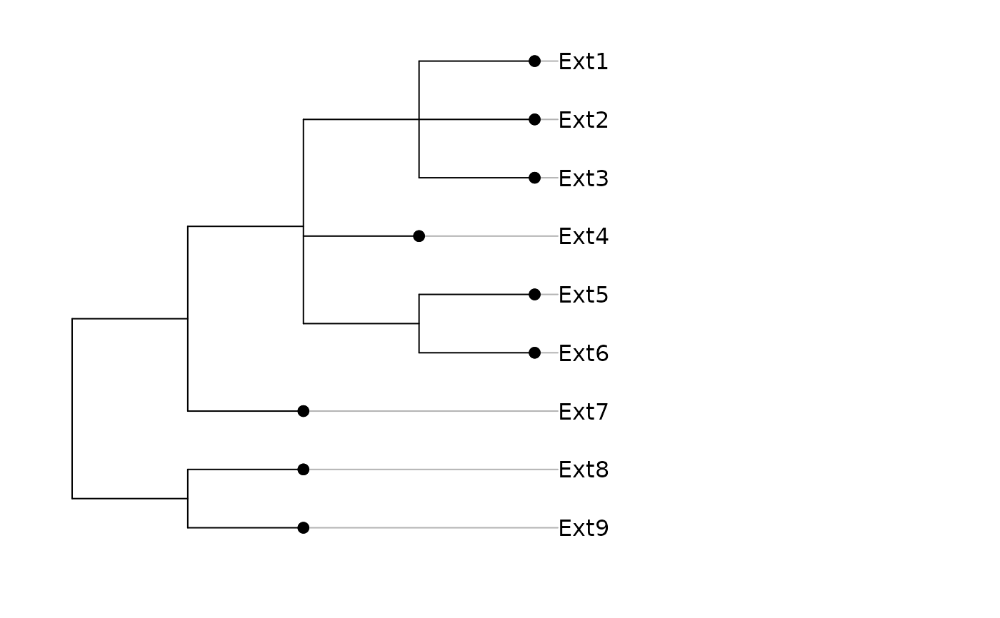

Create phylogeny
newick2phylog.RdThe first three functions ensure to create object of class phylog from either a character string in Newick format (newick2phylog) or an object of class 'hclust' (hclust2phylog) or a taxonomy (taxo2phylog).
The function newick2phylog.addtools is an internal function called by newick2phylog, hclust2phylog and taxo2phylog when newick2phylog.addtools = TRUE. It adds some items in 'phylog' objects.
Usage
newick2phylog(x.tre, add.tools = TRUE, call = match.call())
hclust2phylog(hc, add.tools = TRUE)
taxo2phylog(taxo, add.tools = FALSE, root="Root", abbrev=TRUE)
newick2phylog.addtools(res, tol = 1e-07)Arguments
- x.tre
a character string corresponding to a phylogenetic tree in Newick format
(http://evolution.genetics.washington.edu/phylip/newicktree.html)- add.tools
if TRUE, executes the function
newick2phylog.addtools- call
call
- hc
an object of class
hclust- taxo
an object of class
taxo- res
an object of class
phylog(an internal argument of the functionnewick2phylog)- tol
used in case 3 of
methodas a tolerance threshold for null eigenvalues- root
a character string for the root of the tree
- abbrev
logical : if TRUE levels are abbreviated by column and two characters are added before
Author
Daniel Chessel
Sébastien Ollier sebastien.ollier@u-psud.fr
Examples
w <- "((((,,),,(,)),),(,));"
w.phy <- newick2phylog(w)
print(w.phy)
#> Phylogenetic tree with 9 leaves and 6 nodes
#> $class: phylog
#> $call: newick2phylog(x.tre = w)
#> $tre: ((((Ext1,Ext2,Ext3)I1,Ext...Ext7)I4,(Ext8,Ext9)I5)Root;
#>
#> class length content
#> $leaves numeric 9 length of the first preceeding adjacent edge
#> $nodes numeric 6 length of the first preceeding adjacent edge
#> $parts list 6 subsets of descendant nodes
#> $paths list 15 path from root to node or leave
#> $droot numeric 15 distance to root
#>
#> class dim content
#> $Wmat matrix 9-9 W matrix : root to the closest ancestor
#> $Wdist dist 36 Nodal distances
#> $Wvalues numeric 8 Eigen values of QWQ/sum(Q)
#> $Wscores data.frame 9-8 Eigen vectors of QWQ '1/n' normed
#> $Amat matrix 9-9 Topological proximity matrix A
#> $Avalues numeric 8 Eigen values of QAQ matrix
#> $Adim integer 1 number of positive eigen values of QAQ
#> $Ascores data.frame 9-8 Eigen vectors of QAQ '1/n' normed
#> $Aparam data.frame 6-3 Topological indices for nodes
#> $Bindica data.frame 9-8 class indicator from nodes
#> $Bscores data.frame 9-8 Topological orthonormal basis '1/n' normed
#> $Blabels character 6 Nodes labelling from orthonormal basis
plot(w.phy)

if (FALSE) {
# newick2phylog
data(newick.eg)
radial.phylog(newick2phylog(newick.eg[[8]], FALSE), cnode = 1,
clabel.l = 0.8)
w <- NULL
w[1] <- "(,((((((((((((((((,,(,(,))),),(((,(,)),(,)),),(,(,)),(,)),((((("
w[2] <- ",(,)),),),(,)),((((,((,),((,(,)),))),(,)),(,(,),,((,),(,)),)),("
w[3] <- "(((((,),),(,(,))),),(,)),(((,),),)))),((,,((,),)),(,)),((,),(,)"
w[4] <- ")),(((((((((,,),),,),),((,),)),(,),((,),)),),(((((,),),),((,),)"
w[5] <- "),(((,(,(,(,)))),(,)),(((,),(((((((,),),),,),(,)),(,)),)),((,)"
w[6] <- ",))))),(,((,),(,)),((,(,)),)))),((((,(,(,))),((,(,)),,((,(,)),)"
w[7] <- ",)),(((,),),(((,),),))),((,),))),((((((((((,,,,(,)),),((,),)),("
w[8] <- ",(,))),(((((((((,(,)),(,)),((((,((,),(,(,(,))))),((,),(,(,)))),"
w[9] <- "),((,),))),(((((((((,(,)),((,),(,))),),),),(((,((,),)),),((,((,"
w[10] <- "),)),)),(,)),(,(,(,)))),((((,(,)),(,)),(((,),(,)),(,),,(,))),(,"
w[11] <- "))),(,,,))),((((,),),),(((,(,(,))),((,),)),(,)))),(,)),),(,((,("
w[12] <- ",)),),(((,),),))),),(((,),),(,),(,(,))),(((,),(,)),((,),(,)))),"
w[13] <- "(((,),((,),)),(((((,,,,,),(,)),(,)),(,((,),))),))),(,(((((,(((("
w[14] <- ",(,)),),),)),),((,((,),((,((,),(,))),))),)),((((,),(((,),(,(,))"
w[15] <- "),)),),)),((,),)))),(((,((,,((,),)),)),),((,),))),((,),(,))),(("
w[16] <- ",),)),(((((,),((,(,)),(((,(,)),(,(((,),),))),))),(,),,),),),,(,"
w[17] <- ")),((((,),,),),((,,,),((,),((,),))))),((((((,(,)),,(,)),,(,),(,"
w[18] <- "),),(((((,(,(,),)),(((,),,),(,))),),),),,,((,),)),),)),(((((,),"
w[19] <- "(,(,)),),((,((,),),,),)),(((((((,),((((,,,),(,(,))),(((,(,)),),"
w[20] <- "(,))),)),),),),(,)),),),((,),))),((,),)),(((((((((((,),),(((((("
w[21] <- ",),),((,),)),(,)),),)),(,)),),((((((,),),(((,),),)),(,)),),(,))"
w[22] <- ",),),),),(,)),),((,),(,),,,)),(,(,(,)))),),(,)),),);"
phy1 <- newick2phylog(w,FALSE)
phy1
radial.phylog(phy1, clabel.l = 0, circle = 2.2, clea = 0.5,
cnod = 0.5)
data(newick.eg)
radial.phylog(newick2phylog(newick.eg[[8]], FALSE), cnode = 1,
clabel.l = 0.8)
# hclust2phylog
data(USArrests)
hc <- hclust(dist(USArrests), "ave")
par(mfrow = c(1,2))
plot(hc, hang = -1)
phy <- hclust2phylog(hc)
plot(phy, clabel.l = 0.75, clabel.n = 0.6, f = 0.75)
par(mfrow = c(1,1))
row.names(USArrests)
names(phy$leaves) #WARNING not the same for two reasons
row.names(USArrests) <- gsub(" ","_",row.names(USArrests))
row.names(USArrests)
names(phy$leaves) #WARNING not the same for one reason
USArrests <- USArrests[names(phy$leaves),]
row.names(USArrests)
names(phy$leaves) #the same
table.phylog(data.frame(scalewt(USArrests)), phy, csi = 2.5,
clabel.r = 0.75, f = 0.7)
#taxo2phylog
data(taxo.eg)
tax <- as.taxo(taxo.eg[[1]])
tax.phy <- taxo2phylog(as.taxo(taxo.eg[[1]]))
par(mfrow = c(1,2))
plot(tax.phy, clabel.l = 1.25, clabel.n = 1.25, f = 0.75)
plot(taxo2phylog(as.taxo(taxo.eg[[1]][sample(15),])),
clabel.l = 1.25, clabel.n = 1.25, f = 0.75)
par(mfrow=c(1,1))
plot(taxo2phylog(as.taxo(taxo.eg[[2]])), clabel.l = 1,
clabel.n = 0.75, f = 0.65)
}